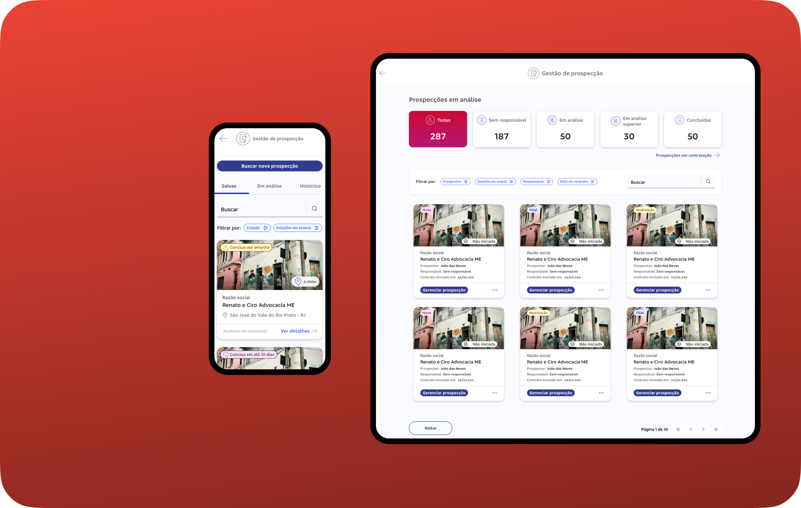
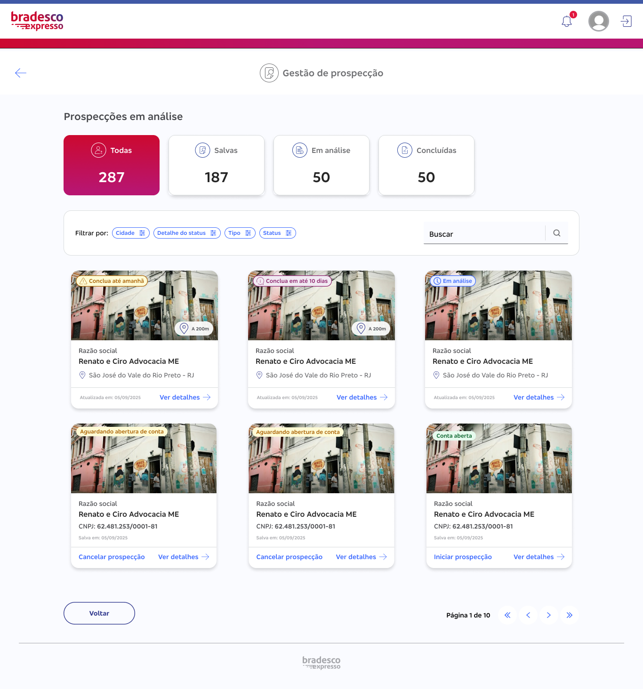
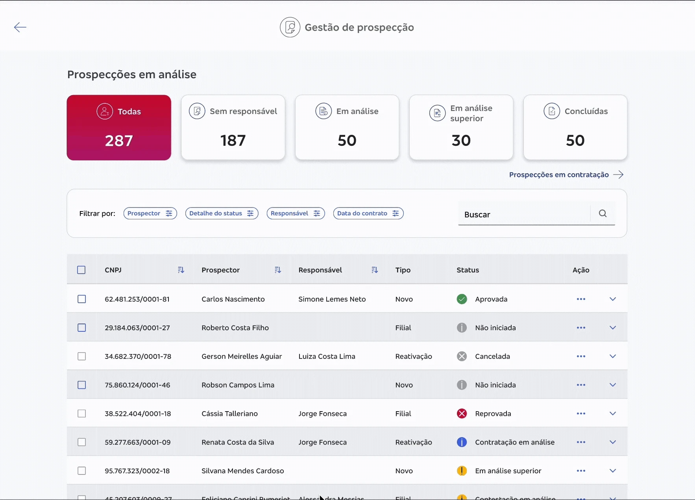
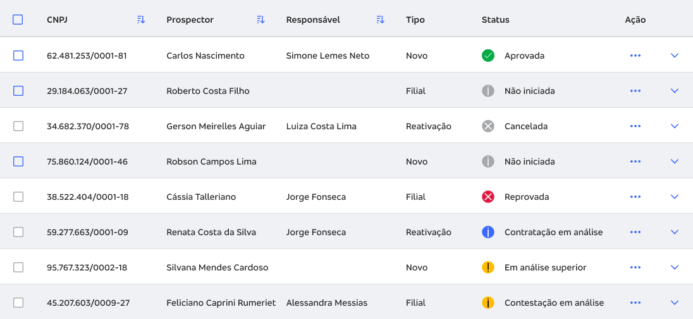
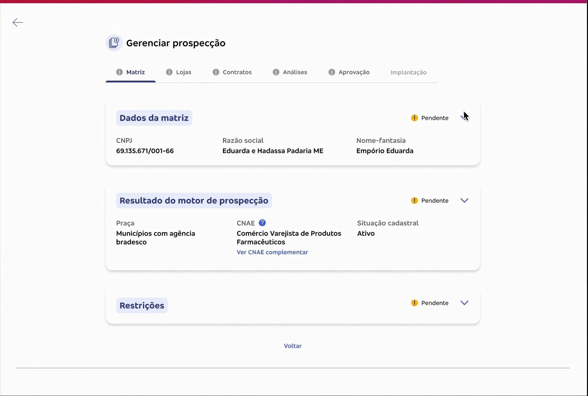
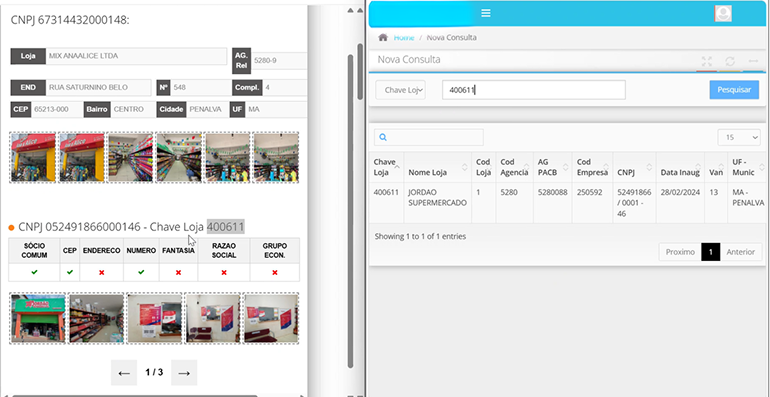
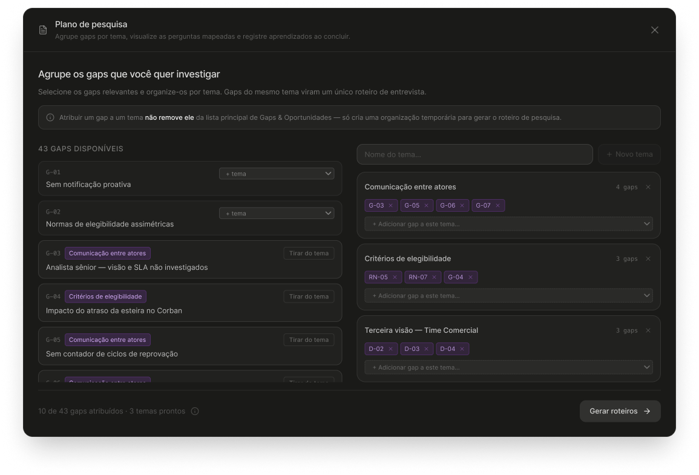
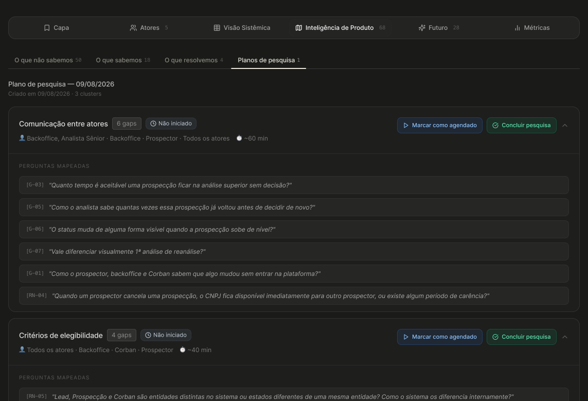

Prospectar um novo correspondente bancário era um processo inteiramente analógico. O prospector ia até o estabelecimento, preenchia fichas em papel, voltava para a agência, e o processo de aprovação podia levar semanas. Várias tentativas de digitalizar esse processo falharam ao longo dos anos.
Fui responsável pelo redesign da plataforma que digitaliza essa operação. Na prática, não era uma plataforma: eram duas. Uma para o prospector, que trabalha em campo pelo celular. Outra para o analista de backoffice, que analisa cada prospecção no desktop. Dois contextos de uso opostos, duas jornadas, um processo só.
Correspondentes bancários são pequenos negócios, de mercearias a grandes redes varejistas, que oferecem serviços bancários onde não há agência física. São 41 mil ativos, muitas vezes o único ponto de acesso a serviços bancários na cidade.
O projeto tinha restrições reais: produto interno e obrigatório (os usuários não podem escolher não usar), design system institucional (sem redesenhar componentes base), equipe lean (eu, uma UX Writer, um PO e time de desenvolvimento), e sem acesso a dados de uso, porque a instrumentação ainda não existia.
A jornada mobile do prospector, pensada para uso em campo. A plataforma de análise do backoffice, incluindo a reconstrução da jornada de análise de similaridade. Uma nova arquitetura de informação para escalar a plataforma. E métricas de negócio definidas antes de ter acesso aos dados, criando argumentos concretos para instrumentação.
Quando você vai digitalizar um processo analógico, o problema nunca é só "digitalizar". O processo que estávamos transformando em software nunca tinha sido completamente documentado em lugar nenhum (alegria). Decisões tomadas sem registro, regras de negócio vivendo na cabeça das pessoas, e perfis de usuário que apareciam só depois que o desenvolvimento já tinha começado. O terror de todo time de produto né?
Tentando blindar o time desse risco, parei e construí um sistema de inteligência de produto: uma documentação viva que centraliza o que sabemos, o que não sabemos, e o que ainda vamos descobrir. Esse sistema revelou gaps que o time não estava vendo e virou um modelo de documentação escalável e replicável para outros projetos. [ir → Sistema de Inteligência]
Um dos aprendizados mais importantes do projeto foi que o número de atores mudou durante a construção. Comecei com 2 (prospector e backoffice) e terminei com 5. Cada ator novo descoberto mudou decisões de design que já tinham sido tomadas. O que é exatamente o que abordamos na seção anterior: não é falha de pesquisa, é o padrão de qualquer projeto que digitaliza um processo analógico, porque o processo real nunca está documentado por completo.
Agente de campo que visita estabelecimentos para prospectar novos correspondentes. Trabalha pelo smartphone pessoal, em campo, sob sol forte, muitas vezes com uma mão ocupada. Busca CNPJs, preenche o cadastro com fotos georreferenciadas, coleta a assinatura do Corban e resolve pendências quando reprovado.
Gap crítico: não recebe notificação proativa de mudança de status. Precisa entrar na plataforma pra saber se algo mudou (G-01).
Analisa as prospecções recebidas, verificando dados, fotos e critérios de elegibilidade. Trabalha no desktop, plataforma aberta o dia inteiro. Puxa prospecções de uma fila sem responsável definido e decide: aprovar, reprovar (volta como "Pendente"), ou escalar.
Gap crítico: acessa normas de elegibilidade que o prospector não vê. Essa assimetria gera reprovações por critérios que o prospector nem sabia que existiam (G-02).
Analista com permissões elevadas que recebe escalonamentos. Tem fila separada e pode alocar prospecções para analistas específicos. Não estava no briefing original: foi descoberto quando uma analista mencionou casualmente que "às vezes a prospecção sobe para alguém com mais permissão". A existência dele revelou que não há SLA para análise superior (G-03) e que o prospector não sabe quando sua prospecção foi escalonada (G-06).
O dono do estabelecimento que vai virar correspondente. É o "cliente" do prospector. Recebe acesso por email, visualiza contratos, assina pela plataforma. Este mapa cobre só o momento de assinatura; a jornada pós-ativação pertence a outro time (B2C).
Gap crítico: quando a esteira atrasa, o Corban fica sem informação e aciona o prospector, que aciona o comercial. Custo operacional invisível que nenhum dashboard registra (G-04).
Gerencia os prospectores: acompanha desempenho, faz onboarding, intervém quando necessário. Ferramenta atual: WhatsApp e planilhas. O que comem? Onde vivem? Como se comunicam? Sexta a noite no Globo Repórter (ou na sala de discovery mais próxima). Ainda não sabemos como organizam o trabalho nem quais métricas acompanham (não é o ideal, mas acontece com frequência. Discoverys estão aí pra isso).
Vou ser sincera sobre o ponto de partida: quando entrei no projeto, o produto estava pegando fogo. O primeiro ano foi mais de negócio do que de design — a plataforma existia, mas a jornada de prospecção ainda estava sendo descoberta no ódio (confesso que às vezes ainda está até hoje, mas problema pra outro ator rs).
E foi aí que aconteceu o erro que definiu todo o resto: a jornada inteira tinha sido construída para tablet. Não porque alguém validou isso com um prospector, mas porque ninguém tinha perguntado a um prospector. As decisões vinham do PO e do time de negócio, sem o usuário final na sala (um grande erro se quiser a minha opinião).
Um ano de produto depois, numa discovery, finalmente incluíram um prospector de verdade na conversa. E veio a caixinha de surpresas (que pode nem ser uma surpresa tão grande assim né).
Camada 1 — Tablet: a suposição original. Toda a jornada foi desenhada aqui.
Camada 2 — Desktop: quando o tablet caiu, a hipótese seguinte. Também errada.
Camada 3 — Celular pessoal: a verdade. O prospector trabalha em campo, em movimento, sob sol forte, muitas vezes com uma mão ocupada. Ele usa o próprio celular.
Três suposições furadas por uma única conversa com quem usa. O aprendizado não foi "erramos o device" — foi que um ano de trabalho aconteceu sem o usuário final na discussão, e nenhuma quantidade de discovery de negócio substitui uma pergunta feita a quem usa de verdade.
Aqui está a parte que raramente se conta sobre produto: a V1 não nasceu ruim. Mas, pouco a pouco, ela envelheceu igual leite.
O formulário começou razoável. Mas cada discovery trazia um "adiciona só mais esse campo" — e como tudo vivia na mesma página, sob pressão de "sobe rápido" do desenvolvimento, o formulário foi inchando até virar um monstro de rolagem infinita no celular. A tabela teve o mesmo destino (mas ela era um problema desde o início): foi construída como tabela mesmo no mobile, e ficou horrível, scroll horizontal caótico numa tela de smartphone.
A V1 que está em produção hoje é o retrato dessa dívida acumulada: um formulário gigante sem separação de etapas, e tabelas que não cabem na tela. Funciona? Tecnicamente. É uma boa experiência? Não.
Desenhei uma segunda versão da jornada como o cenário ideal. Ela está aprovada pelo time; o que falta é a fila de implementação, porque o desenvolvimento está com entregas atrasadas. Não é uma proposta solta, nem está no ar. Está aprovada e esperando.
A tabela virou card. Substituí as tabelas mobile por cards inspirados na lógica de e-commerces e marketplaces (como a OLX): cada prospecção encapsulada numa unidade de decisão, com a informação que importa visível de imediato, sem scroll horizontal.
O critério que usei pra decidir (não foi gosto pessoal, nem cópia da OLX):
Quando a tabela faz sentido → comparação exaustiva de múltiplos itens por métricas quantitativas (tipo comparar a taxa de juros de 10 bancos). É ferramenta de análise estática.
Quando a tabela não faz sentido → quando o objetivo é decisão rápida ou execução de tarefa. No meu caso, o prospector precisava saber qual lugar visitar primeiro e o que faltava preencher. Aí a tabela vira ruído visual (no mobile então, dispensa comentários).
A pergunta deixou de ser "como eu espremo essa tabela?" e virou "como eu orquestro esse volume de informação sem fritar o cérebro do usuário?". Fui buscar repertório em quem domina o espaço pequeno há décadas: e-commerce e marketplace.
O formulário gigante virou uma decisão em aberto — de propósito. Aqui eu tenho duas hipóteses, e a escolha entre elas não é minha para fazer sozinha:
O que decide entre as duas não é o meu gosto. É o comportamento real de uso, e esse dado ainda não existe, porque o produto não tem instrumentação. Pessoalmente, eu prefiro a versão linear. Mas preferência pessoal não valida hipótese; comportamento de usuário valida. Enquanto o histórico de uso não existe, mantenho as duas vivas e explícitas.
Aqui aconteceu uma coisa que eu não planejei: a liderança gostou tanto da substituição da tabela por cards no mobile que pediu um estudo para levar o mesmo padrão para o desktop.
Repara na inversão. Não fui eu que quis "invadir" o desktop com a minha solução — foi a liderança que, ao ver o resultado no mobile, solicitou a expansão. Esse estudo de desktop existe hoje como exploração a pedido dela; não está em produção, mas nasceu de um reconhecimento concreto: a solução gerou confiança suficiente pra liderança querer mais dela.
Levar cards pro desktop quebra o paradigma de "preencher a tela grande com tabela" e aposta em consistência cognitiva (o usuário não reaprende o sistema ao trocar de device) e redução do custo de interação (aproximar a ação da informação — Lei de Fitts).

Um fato que mudou a dimensão desse trabalho: o problema que eu resolvi aqui está prestes a virar o problema de todo o time.
Hoje a empresa está substituindo os tablets dos outros fluxos por dispositivos do tamanho de um celular. Ou seja: todas as outras jornadas do time vão ter que enfrentar exatamente a mesma dor que eu enfrentei: tabela que não cabe, formulário que não escala, layout pensado para tela grande que quebra na pequena.
Eu já passei por isso. A V2 não resolve só a minha jornada, ela vira o precedente e o playbook para a migração que o resto do time ainda vai ter que fazer. O que começou como o meu problema isolado virou referência de como fazer a transição para tela pequena sem repetir os meus erros.
No começo da jornada, o analista precisa triar: o que não tem responsável, o que está em análise superior, o que é histórico. No legado, isso eram abas. Troquei por cards com contadores clicáveis, componentes de dashboard. Em vez de ler abas, o analista bate o olho num painel e vê os volumes de cada fila. Mesma filosofia dos cards do prospector: transformar dado em unidade de decisão escaneável.

Na mesma linha, tenho a proposta de trocar a tabela de prospecções por uma visão de cards. Hoje cada prospecção é uma linha horizontal comprida (CNPJ, prospector, responsável, status). A proposta traz uma miniatura da foto da fachada, a razão social, a localização e a distância num único bloco — a informação inteira dentro do campo de visão, sem varredura horizontal. Mesmo princípio do Safer e do prospector.
E aqui vale o meu recado sobre tabelas, que você vai me ver repetir: eu não sou contra tabela. Sou contra tabela como resposta automática. Ela é ótima pra comparar muitos itens por métrica, e péssima pra decisão rápida com contexto visual. O problema não é a ferramenta, é usá-la no piloto automático pra um problema que ela não resolve. (Se quiser o rant completo, ele mora no Manifesto Anti-Tabelas — te aviso quando estiver publicado.)


Quando o analista abre uma prospecção, ele não segue um caminho reto do começo ao fim. Ele vai e volta: consulta um dado da Matriz, checa uma foto na aba de Lojas, volta pra Matriz, confere um contrato. Por isso a jornada é navegada por abas, não por wizard. Wizard linear obrigaria uma ordem que o trabalho real não tem.
A aba Matriz é a mais pesada do sistema: dados da Receita Federal, endereço, dados bancários, representantes, faturamento, saúde financeira, análise de risco, restrições. Tudo junto, vira um paredão.
A solução foi agrupar por assunto em acordeões temáticos: um acordeão de faturamento, um de risco, um de dados cadastrais, e assim por diante. O analista abre o que precisa consultar e mantém o resto recolhido. Domar densidade não é esconder informação, é dar ao usuário o controle de quando cada bloco aparece. Pequenas pílulas de conteúdo, sem assustar com a densidade toda de uma vez.
O histórico de uma prospecção é, na essência, um diálogo: o prospector envia, o analista devolve, o prospector corrige, e por aí vai. Então desenhei a aba Análises com o modelo mental de chat. Os atores externos (prospector, motor de prospecção) aparecem à esquerda; as devolutivas do analista, à direita. O motor de prospecção abre a thread como análise inicial. Um processo burocrático ganhou a legibilidade de uma conversa de chat, algo que qualquer pessoa sabe ler sem treino.

Aqui está uma proposta que ainda vai pra V2, mas que mostra um padrão que se repete no meu trabalho. Hoje o analista percorre todas as abas e, só no final, vai à aba de Aprovação apertar "reprovar" e caçar a opção certa no meio de um monte de checkbox. É trabalho duplicado: ele já sabia lá atrás que ia reprovar por causa do faturamento, mas tem que segurar a decisão até o fim.
A proposta é distribuir a decisão. Botões de aprovar/reprovar em cada seção: se o problema está no dado da Receita, o analista resolve ali, no momento em que vê. A aba de Aprovação deixa de ser onde tudo acontece e vira tela de conferência: o analista revisa as decisões que já tomou pelo caminho e confirma.
É a mesma lógica da pré-tela de similaridade que você vai ver adiante: informação de risco primeiro, decisão perto de onde ela nasce. Quando o mesmo princípio resolve dois problemas diferentes no mesmo produto, ele deixa de ser solução pontual e vira jeito de pensar.
Essa é a reconstrução de que mais me orgulho no backoffice. E é reconstrução, não redesign: a função existia no sistema legado com propósito parecido, mas foi refeita do zero para a nova plataforma. Não peguei uma tela bonita pra deixar mais bonita: parti de um sistema em produção, com lógica de negócio real, que estava confundindo quem dependia dele.
O legado marcava a criticidade da prospecção com bolinhas coloridas (amarelo, laranja, verde) indicando quantos itens eram similares e o nível de suspeita. E comparava os dados com check e X.
Dois problemas graves, e não são de estética:
A cor era o único indicador. Criticidade comunicada só por cor é uma falha de acessibilidade: quem não distingue as cores fica sem a informação. Cor pode reforçar, mas não pode ser a única explicação.
O check e o X estavam invertidos. No comparativo do legado, o dado que estava igual (ou seja, suspeito) aparecia com um check verde ✓, e o dado diferente (ok) aparecia com um X. Inversão completa do modelo mental de todo mundo. Num contexto onde o erro de leitura deixa passar fraude ou reprova um estabelecimento legítimo, o analista tinha que parar e pensar "espera, o certo aqui é o errado" toda vez. Risco cognitivo real, embutido na interface.
Antes de desenhar qualquer tela, estressei a jornada com mais de 25 perguntas — uma das coisas que motivou a criação do sistema de inteligência de produto. E aqui descobri uma coisa que não estava documentada em lugar nenhum: o motor de similaridade e o motor de elegibilidade são sistemas distintos, que rodam em momentos diferentes, informação que impactava direto o handoff com a engenharia.
Exemplos de perguntas que levei pro discovery
· O analista pode aprovar uma prospecção mesmo com alta similaridade? Quem tem essa alçada?
· Já aconteceu de uma fraude real passar pela checagem? O que falhou?
· O que acontece com um falso positivo — quanto retrabalho ele gera pro prospector?
Saiu o farol, entrou o comparativo lado a lado. Prospecção atual à esquerda, loja existente à direita, campo a campo. O analista não precisa mais interpretar "o que raios significa a bolinha colorida": ele vê o que é igual e decide.
As tags carregam o peso que faltava. Campos idênticos ganham a tag "Idêntico"; campos parecidos, a tag "Similar". Isso resolve um problema antigo: no legado, sócio em comum valia o mesmo que CEP igual. Agora a gradação é explícita, com texto além da cor — sócio idêntico e endereço só parecido não pesam igual, e a interface diz isso com palavra, não só com cor.
As fotos entram na comparação. O analista vê os dois estabelecimentos lado a lado, não só os dados. Porque identificar se são o mesmo lugar é, muitas vezes, mais rápido pelo olho do que pela leitura de um CNPJ de catorze dígitos. (Não tenho o dado instrumentado pra provar isso ainda: é hipótese fundamentada em observação de campo, e virou um gap no mapa de inteligência esperando validação.)

O caso mais comum de similaridade não é fraude. É transferência de ponto comercial: alguém vendeu o estabelecimento e o novo dono quer virar correspondente. Operação legítima, que o sistema legado tratava como suspeita e mandava pro mesmo funil de retrabalho.
Isso muda tudo no design. Se eu desenho a tela só pro caso dramático (fraude), eu prejudico o caso frequente (transferência legítima). Desenhar pro caso comum, sem baixar a guarda pro caso raro, é o que separa uma tela que assusta de uma que ajuda a decidir. E tem uma camada de negócio: quando alguém tenta "adiantar o processo" por fora, isso vira risco jurídico pro banco. A pré-checagem no lugar certo protege o banco antes do problema existir.
Decidi que, quando uma prospecção tem flag de similaridade, o analista vê a tela de duplicidade antes das abas normais. Se a prospecção vai ser reprovada por duplicidade, ele descobre antes de investir atenção em Matriz, Lojas e Contratos. O tempo que ele economiza é custo operacional que o banco economiza.
Considerei três posicionamentos e documentei por que descartei dois: alert simples no topo (não permite decidir loja por loja), inline na aba Lojas (mistura dois modos de pensar — validar foto e investigar fraude são cabeças diferentes), e painel lateral (funciona como navegador, não como tela de decisão). A pré-tela venceu, e foi aprovada por unanimidade pelo time.
Estendi a lógica pra ponta do prospector: uma pré-checagem de similaridade antes dele enviar a prospecção pra análise. Se ele já sabe que tem flag, justifica na hora — usando o campo de defesa que já existe. A justificativa viaja junto, e o analista tem contexto antes da primeira análise. Resultado: pelo menos um ciclo de reprovação-contestação eliminado, e um deslocamento a menos do prospector até a loja pra corrigir algo que dava pra resolver na origem. E se a justificativa for algo mapeado que já vai ser reprovado (como o comportamento de venda de um ponto comercial), a gente avisa antes mesmo dele enviar.
Com dois anos de produto, descobri (na melhor tradição da descoberta no ódio) que o analista de backoffice precisava ver exatamente o que o prospector vê. Não pra editar, mas pra entender o contexto da prospecção que estava analisando, ou caso precisasse oferecer suporte a um prospector.
O tech lead e o PO queriam colocar essa visão fora da gestão de prospecção, num painel de sistema separado onde o backoffice já acessa várias coisas da plataforma. Pra mim não fazia sentido: não é um módulo novo, é só outra visão da mesma prospecção. Discuti bastante pra defender que isso pertencia à gestão de prospecção, como um switch — o analista está na visão dele, clica, e passa pra ver o que o prospector vê. Ganhei a discussão. Hoje existe um link que faz essa troca de visão, e ela está aprovada e em esteira. (Modéstia à parte, eles gostaram bastante da proposta final e foram obrigados a admitir que eu estava certa 💅🏻)
E aqui a reconstrução corrigiu um erro do legado: lá, o backoffice conseguia interagir com a prospecção, o que nunca deveria acontecer, era só comportamento quebrado da plataforma. Na nova, ele vê tudo (campos preenchidos, campos que faltam, o que tem erro), mas não tem nenhuma ação real ali dentro. É a DD-01 na prática: visão espelhada, somente leitura. A melhor forma de evitar a edição acidental é remover a possibilidade dela existir.
Duas decisões desta plataforma são, na essência, de conteúdo. E conteúdo neste produto já foi literalmente o meu trabalho: atuei como UX Writer do projeto antes de ser a designer dele, o que me deixa confortável pra defender esse tipo de decisão com lastro, não com achismo.
"Pendente", nunca "Reprovada" (DD-02). Na visão do prospector, uma prospecção reprovada pelo backoffice nunca aparece como "Reprovada". Aparece como "Pendente" ou "Dados pendentes". "Reprovada" sugere fim de linha; a maioria das reprovações é recuperável com um ajuste simples. "Pendente" convida à ação em vez de sugerir desistência. Essa decisão já existia na prática quando cheguei, mas ninguém tinha registrado o porquê. Quando foi questionada numa reunião, foi necessário muito esforço para defender e relembrar o porquê da decisão, e só foi possível porque eu já estava no projeto como UX Writer (lá em 1900 e bolinha). Recuperei a justificativa e formalizei no sistema. Agora a próxima pessoa que questionar encontra resposta, sem esforço e com histórico.
O status "Cancelada" e o gap que continua aberto (DD-03). O prospector pode cancelar uma prospecção, liberando uma das 10 vagas da carteira. Durante uma apresentação, a Cássia (analista de backoffice) apontou que o status "cancelada" não aparece nos relatórios do backoffice — ou seja, o custo de cada prospecção cancelada é invisível pra gestão. Esse gap ainda não foi resolvido, por questão de prioridade. Mas não foi esquecido: está registrado no mapa de inteligência do produto, com ID, esperando o próximo discovery que tocar nesse fluxo.
A ideia inicial era modesta… até singela: eu queria organizar informações pra um discovery. Só isso.
O que acendeu o alerta foi descobrir que o Time Comercial ia entrar no radar em breve, como uma terceira visão do produto. E até pouco tempo atrás, eu nem sabia da existência desse time. Então, eu pensei: como é que eu consigo blindar o time desse tipo de situação? Como eu consigo mapear tudo que eu já sei sobre o PCO, todas as dores, todos os pontos cegos, num lugar só, antes de mais uma frente chegar?
Porque a gente já tinha feito milhares de FigJams. E FigJam, no dia a dia, some. Ninguém volta nele. Vira aquele arquivo com trocentas páginas que todo mundo jura que vai consultar e ninguém consulta. Eu não queria fazer mais um.
Só que quanto mais eu estressava as informações, mais eu percebia que não era caso de copiar e colar o que já existia. Boa parte do que eu sabia não estava organizado em lugar nenhum, e o que estava, estava espalhado. Tive que estressar tudo de novo, do zero.
Teve uma história que me marcou e que virou o argumento central desse sistema.
Me contaram de um caso onde uma pessoa que dominava um processo faleceu. E o processo morreu junto com ela. Ninguém mais sabia como aquilo funcionava, então ninguém mais pôde mexer. O sistema virou intocável por falta de conhecimento, não por decisão.
Hoje eu estou no produto desde o começo. Eu sou a pessoa que lembra por que aquela decisão foi tomada em 2023. Mas e se eu não estivesse? E se eu saísse amanhã?
Documentar deixou de ser sobre organização e virou sobre resiliência. O sistema existe pra que o conhecimento do produto não more na cabeça de ninguém, inclusive na minha. (Sim, isso significa que eu me tornei substituível de propósito. Acho que é a coisa mais sênior que eu já fiz.)
Aqui está o teste real: o sistema não foi um exercício bonito, ele mudou o que eu sabia sobre o produto.
Descobriu o quinto ator. O briefing dizia dois. Enquanto eu mapeava as jornadas e cruzava informações, apareceram cinco. O Analista Sênior, que ninguém tinha mencionado formalmente, saiu de um comentário casual e virou um ator com fila própria, gaps próprios e nenhuma documentação de SLA.
Recuperou o porquê de decisões que já existiam. A decisão de chamar de "Pendente" em vez de "Reprovada" estava lá na prática, mas o motivo tinha se perdido. Quando foi questionada, foi necessário muito esforço para defender e relembrar o porquê da decisão, e só foi possível porque eu já estava no projeto como UX Writer (lá em 1900 e bolinha). Recuperei a justificativa e formalizei no sistema. Agora a próxima pessoa que questionar encontra resposta, sem esforço e com histórico.
Capturou os gaps que a gente descobre no meio da conversa. O status "cancelada" que não aparece no relatório, apontado pela Cássia (analista de backoffice) durante uma apresentação. Não resolvido até hoje, por prioridade. Mas registrado, com ID, esperando o discovery que tocar nesse fluxo.
Assumiu o que a gente não sabe. São 25 gaps mapeados e 19 regras de negócio, sendo 7 confirmadas e 12 ainda em aberto. Esse número em aberto não é vergonha, é o retrato honesto de um produto que digitalizou um processo que nunca esteve documentado. O valor não é ter todas as respostas. É saber exatamente quais perguntas ainda estão de pé.
Definiu métricas antes de ter dados. Nove KPIs, todos marcados com o status mais honesto possível: "Hoje: não sabemos". Qual o custo médio pra aprovar uma prospecção (os CAPs)? Quantos contatos de suporte são gerados por falta de notificação proativa? A empresa não consegue responder. Formatar como pergunta em aberto cria urgência de instrumentação de um jeito que uma meta inventada nunca criaria.
O que separa esse sistema de mais uma documentação é que ele gera coisa. Estou construindo dentro dele um gerador de plano de pesquisa: você seleciona os gaps que quer investigar, agrupa por tema, e ele monta os roteiros de entrevista com objetivo de sessão e perfil sugerido de participante, com status pra acompanhar conforme a pesquisa avança.
Ou seja: o mapa de dores vira insumo de discovery automaticamente. Em vez de eu chegar numa reunião tentando lembrar "a gente já falou disso? quando?", eu chego com o roteiro pronto, montado a partir do que já está registrado.


O que nasceu como uma necessidade do PCO acabou virando uma ferramenta com identidade própria, versionamento e escala pra outros produtos. Já apliquei a mesma estrutura no DW Safer, e tenho um template genérico e replicável pra comunidade (com dados fictícios, porque dado de produto real não sai de casa).
📁 Quer ver o sistema por dentro? Case próprio: telas, construção e como replicar.ABRIR ▸